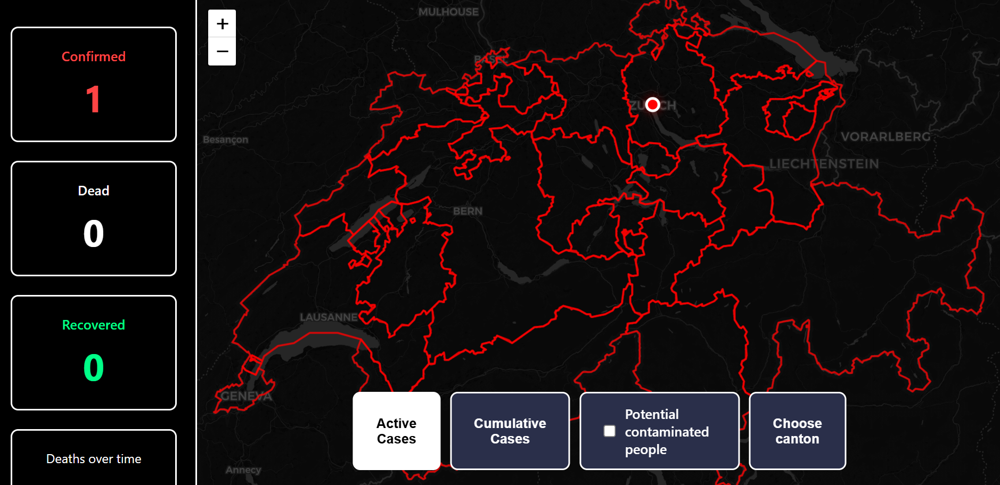

Project Overview
The Hantavirus Tracker combines epidemiological modeling with interactive visualization to demonstrate how a novel pathogen would disseminate across Switzerland's 26 cantons. Using confirmed case data from Google Sheets, the simulator calculates infection projections based on:
- Reproduction Rate (R₀): Adjustable from 0.1 to 10.0
- Incubation Period: Customizable (1-60 days; default 17 days for Andes virus)
- Time Horizon: 1 week to 2 months simulation windows
- Geographic Spread: Local transmission + commuter-based inter-canton propagation
Scientific Foundation
The simulator is calibrated to Andes virus, the only human-to-human transmissible hantavirus strain. Based on peer-reviewed research:
- Incubation Period: 7-39 days (median 18 days)
- Contagiousness Profile:
- Days 0-15: Asymptomatic, non-contagious
- Days 16-17: Pre-symptomatic, 20% transmission (1-2 days before symptom onset)
- Days 18+: Symptomatic, 100% contagious
- Transmission: Person-to-person via prolonged close contact
- Fatality Rate: ~38% (historically high)
Realistic Transmission Dynamics
The simulator models transmission across three temporal phases. During week 1, when infection is asymptomatic and undetected, transmission splits 70% local and 30% via commuter routes as people continue normal activity.
Weeks 2-3 shift to 60% local, 40% commuter—still asymptomatic but increasingly infectious. By week 4, symptoms emerge and isolation begins: 90% local, 10% commuter.
Urban density directly affects R₀—Zürich (4,700/km²) and Geneva (12,000/km²) show higher transmission rates than rural cantons. Maximum infections are capped at 10% of canton population (healthcare capacity limit). Inter-canton spread follows Switzerland's major train routes: Zürich-Bern (15,000 daily), Bern-Lausanne (8,000 daily), Lausanne-Geneva (25,000 daily).
Data Sources & References
- OFSP (Federal Office of Public Health - Switzerland): Case reporting standards
- WHO (World Health Organization): Hantavirus epidemiological bulletins
- NCBI/PubMed: Peer-reviewed Andes virus transmission studies
- Swiss Federal Statistical Office: Canton population & density data
- OpenStreetMap/Nominatim: Geocoding & geographic data
- Google Sheets API: Real-time case data management
Limitations & Assumptions
The model employs several simplifications for tractability. The transmission framework does not stratify by age, account for healthcare interventions, or model behavioral adaptation beyond isolation—all of which influence real epidemics. Contact patterns within cantons are assumed homogeneous, though density varies significantly. Commuter flows are static; actual train traffic fluctuates by season, day, and time. Seasonal effects (winter heating, mobility changes) are not modeled. Geographic routing is simplified to major urban centers, omitting secondary transmission corridors.
Future Enhancements
Planned developments include multi-scenario comparison tools for testing alternative parameter sets, intervention modeling (vaccination, quarantine, travel restrictions), and age-stratified transmission dynamics. Integration with real-time OFSP case data via live API would replace manual CSV uploads. Multi-language support (French, Italian) and export functionality (PDF/CSV reports) would improve accessibility. Advanced features include spatial correlation analysis mapping canton-to-canton transmission matrices and network-level intervention assessment.
References
- Gonzalez Della Valle, M., Edelstein, A., Miguel, S., Martinez, V., Cortez, J., Cacace, M.L., Jurgelenas, G., Sosa Estani, S., & Padula, P. (2002). "Andes virus associated with hantavirus pulmonary syndrome in northern Argentina and determination of the precise site of infection." American Journal of Tropical Medicine and Hygiene, 66(6), 713-720. https://doi.org/10.4269/ajtmh.2002.66.713
- ECDC (European Centre for Disease Prevention and Control). "Hantavirus-associated cluster illness on cruise ship." ECDC Assessment and epidemiological update. https://www.ecdc.europa.eu/en/publications-data/hantavirus-associated-cluster-illness-cruise-ship-ecdc-assessment-and
- OFSP (Swiss Federal Office of Public Health). Hantavirus information and epidemiological data. https://www.bag.admin.ch/en/newnsb/p--A7yPSfxdBqR0N9kZMC
- WHO (World Health Organization). "Disease Outbreak News - Hantavirus." https://www.who.int/emergencies/disease-outbreak-news/item/2026-DON600